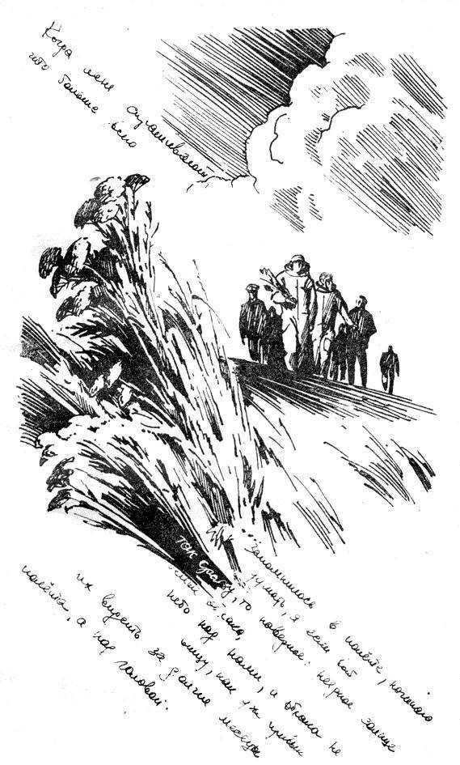

"Tutte le condizioni necessarie per un omicidio": la strana storia di una citazione di un cosmonauta
Tutte le condizioni necessarie per perpetrare un omicidio sono soddisfatte chiudendo due uomini in una cabina di 18 per 20 piedi... per due mesi
Quando si discute delle condizioni di vita degli astronauti questa breve e minacciosa citazione di Valerij Rjumin (Валерий Викторович Рюмин) è spesso una delle linee di apertura. Sicuramente è un chiaro segnale che essere astronauti non era in realtà un'esperienza così entusiasmante, specialmente durante missioni che duravano diverse settimane o mesi.
Dopo averla incontrata alcune volte intorno al momento della morte di Rjumin nel 2022, ho iniziato a chiedermi quale fosse il suo contesto originario. Quando è stata pronunciata, o scritta? È accaduto qualche incidente grave durante quella missione? È mai successo qualcosa di simile a un omicidio nello spazio?!
È il momento di scoprirlo.
Alla ricerca della fonte
Vista la scarsità di informazioni originali riguardo a Rjumin in italiano, l'unica speranza di scoprire qualcosa di interessante è di seguire la traccia delle citazioni inglesi.
Uno dei problemi più ovvi della mia ricerca è diventato evidente quasi subito: nessuna fonte per la citazione viene mai riportata. Inoltre sembrano esisterne due versioni leggermente diverse:
All the necessary conditions to perpetrate a murder are met by locking two men in a cabin of 18 by 20 feet . . . for two months
come in questo articolo del New Scientist del 1993 (curiosamente, i testi che citano questa versione spesso mantengono i distintivi puntini), oppure:
All the conditions for murder are met if you shut two men in a cabin measuring eighteen feet by twenty and leave them together for two months.
come in questo articolo sugli effetti psicologici del volo spaziale del 2018. Ognuna può essere trovata altrove con leggere variazioni, ma in sostanza si riducono a queste due versioni. Ciò potrebbe significare che, molto probabilmente, più di una traduzione dell'originale russo è disponibile.
Ma dov'è l'originale, o le sue traduzioni?
Gi unici indizi che otteniamo scavando in giro è che è la linea originale venga dal diario personale di Valerij, scritto nel 1980 durante la missione Salyut 6 (spoiler: non è stato commesso alcun omicidio sulla Salyut 6). Tuttavia, trovare questo diario non si preannuncia affatto facile. Certamente non aiuta il fatto che nessuno sembra minimamente interessato a riportare correttamente la fonte.
In una strana eccezione, persino Wikipedia sembra ignorare questo problema. La pagina di Rjumin in qualsiasi lingua che riesco a leggere (en, ru, es, it, pt, hu) non riporta la citazione, eccetto quella francese, dove ancora una volta è comodamente senza fonte. La citazione francese è interessante, e sarebbe stato fantastico se l'avessi trovata prima, perché dopo aver realizzato che la maggior parte delle pagine di traduzione era solo un copia'incolla tradotto dall'inglese ho smesso di cercare indizi in quella direzione. Tutto ciò che abbiamo alla fine di questa ricerca iniziale è una riga nella pagina ISS, sotto il capitolo "Stress", di nuovo senza fonte.
In uno dei tentativi più frustranti di arrivare a una qualunque fonte, ho iniziato da questo post non particolarmente autorevole perché, a differenza di fonti più ovvie, questo indica da dove è stata presa la citazione: è una citazione di seconda mano da “Rocket Men: The Epic History of the First Men on the Moon” di Craig Nelson.
Bene, ma Craig da dove l'ha presa questa linea? Il libro citato ci porta ancora una volta a un altro copia-incolla della stessa identica linea, non una parola di contesto in più, e un riferimento a un'altra fonte: "This New Ocean: The Story of the First Space Age" di William E. Burrows, Random House, 1998, pag. 513. Ok, cerchiamo anche questo libro! Ebbene, anche questo libro cita a sua volta da un'altra fonte, molto più insolita.
"Ryumin on murder: Reviews and Previews, Air & Space, giugno-luglio 1997, pag. 84."
"Air & Space" è una rivista dello Smithsonian. Quindi... un'intervista? Strano, dato che molte fonti sembrano implicare che provenga da un diario. Ma ci sono due versioni di questa citazione, dopotutto. Stiamo finalmente facendo progressi?
L'onnisciente, benedettissimo Internet Archive offre accesso gratuito a una copia di questa precisa uscita della rivista, quindi posso controllare anche questa e cercare quella che spero sia la fonte originale.
Invece, ecco da dove proviene la citazione.

Proviene da una recensione di un altro libro. Questa le pare davvero una fonte valida per qualsiasi cosa, signor Burrows?!
Ma continuiamo. Abbiamo ancora un'indicazione: la citazione dopotutto viene dalla recensione di "Bold Endeavors: Lessons from Polar and Space Exploration" di Jack Stuster. Bene, prendiamo anche questo libro e cerchiamo oltre...
Sfortunatamente Jack non ha badato molto alla qualità delle sue fonti. Nella sezione dei riferimenti, tutto ciò che troviamo è questa riga:
"Ryumin, V. 1980. 175 days in space: A Russian cosmonaut's private diary, edited and translated by H. Gris. Unpublished manuscript."
Ripeto. Unpublished manuscript.
Jack Stuster sta citando un manoscritto non pubblicato.
Sì, la traccia finisce qui. Henry Gris non esiste su Internet eccetto che in un altro documento che cita lo stesso suo lavoro non pubblicato. Gris non ha mai pubblicato la sua traduzione del diario di Rjumin. Game over.
Questo diario deve essere da qualche parte
Dopo alcuni tentativi simili a questo (anche se la maggior parte di essi più brevi, molti dei quali hanno finito per puntare ancora a "Bold Endeavors"), ho deciso che era ora di cambiare tattica. Almeno una versione della citazione deve provenire da questa traduzione non pubblicata del diario di Rjumin. Ma possiamo trovare una qualsiasi edizione pubblicata di questo diario?
"175 days in space: A Russian cosmonaut's private diary" non dà risultati. Allentando la query, Google e altri motori di ricerca cominciano a restituire risultati sul "Diary of a Cosmonaut: 211 Days in Space", il diario del suo collega Valentin Lebedev (Валентин Витальевич Лебедев), che a differenza del suo, è stato pubblicato in russo e in inglese. Cercare cose come "diario di Rjumin" non restituisce indizi eccetto altro frustranti copia-incolla della stessa identica linea.
È il momento di tentare con il russo.
"Рюмин дневник" (approssimativamente "diario di Rjumin") finalmente restituisce un risultato utile: "Год вне Земли: Дневник космонавта" ("Un anno al di fuori della Terra: il diario di un cosmonauta"), che sembra essere in qualche modo disponibile online, anche se solo in russo.
E finalmente, sotto una pagina disegnata a mano e non molto all'interno del libro, troviamo una linea contenente "убийств" (radice di "omicidio").

25 февраля 1979 года \ [...] На Земле немногие тогда себе представляли, возможно ли так долго быть вдвоем. Вот в рассказе американского писателя О. Генри «Справочник Гименея» есть такая просто трагическая фраза: «Если вы хотите поощрить ремесло человекоубийства, заприте на месяц двух человек в хижине восемнадцать на двадцать футов. Человеческая натура этого не выдержит». И написано это всего-навсего 70 лет назад. Всерьез такое обвинение человеческой натуре, естественно, принимать сейчас смешно. Однако длительное пребывание с глазу на глаз, даже с самым приятным тебе человеком, само по себе — испытание.
25 febbraio 1979 \ [...] In quel momento, poche persone sulla Terra si chiedevano se fosse possibile stare da soli insieme per così tanto tempo. In un racconto dello scrittore americano O. Henry “Manuale di Hymen” c'è questa frase semplicemente tragica: “Se vuoi incoraggiare l'arte dell'omicidio, chiudi due persone in una cabina di diciotto per venti piedi per un mese. La natura umana non lo sopporterà". Ed è stato scritto solo 70 anni fa. Naturalmente, ora è ridicolo prendere seriamente un'accusa di questo genere alla natura umana. Tuttavia, un soggiorno prolungato faccia a faccia, anche con la persona che ti piace di più, è di per sé una prova.
(traduzione originale).
Finalmente la fonte effettiva! Piuttosto diversa dalle citazioni che circolano: Henry Gris dev'essere stato creativo nella sua traduzione non pubblicata. Inoltre sembra che sia stata scritta all'inizio del 1979, non nel 1980 come viene riportato di solito: ma si tratta di un errore comprensibile dato che Rjumin ha visitato Salyut 6 una seconda volta nel 1980 e ci è rimasto per ancora più tempo, battendo il proprio stesso record.
È interessante notare che questa riga è stata scritta all'inizio della missione, nel primo giorno registrato nel diario. Non si tratta quindi del prodotto di un conflitto esistente, ma piuttosto dell'aspettativa, la prefigurazione dell'inevitabile tensione. Una differenza che ha delle implicazioni notevoli per una frase che di solito è associata agli effetti delle residenze a lungo termine nello spazio.
Un'altra differenza tra questa versione e quella citata normalmente è che Rjumin menziona solo un mese, non due. Perché tutte le traduzioni hanno raddoppiato il numero dei mesi? Non ne ho idea, ma la mia ipotesi migliore è che potrebbe trattarsi degli effetti di una traduzione molto raffazzonata. Nell'originale, "mese" ("месяц") e una forma declinata di "due", ("двух") appaiono vicini l'uno all'altro, immediatamente seguiti da "persona" ("человек"). Ma nessuno che parli un po' di russo penserebbe che "due" si riferisce a "mese" invece di "persone" (singolare nell'originale per ragioni). È vero, alcune regole di declinazione in russo sono stupidamente complicate, ma secondo me c'è solo un modo di leggere la citazione sopra, e qualsiasi altra interpretazione è forzata. Dopotutto, le persone coinvolte sono ovviamente due, e il numero è scritto solo una volta.
Comunque, siamo a posto! È ora di festeggiare?
Aspetta un secondo... rileggiamola di nuovo nel contesto.
Rjumin stesso sta citando qualcun altro!?
C'è ancora uno strato
Per nostra fortuna Rjumin non cita manoscritti non pubblicati. Una breve ricerca sul “Manuale di Hymen” ci porta rapidamente a un'altra benedizione dell'Internet, Project Gutenberg. Qui scopriamo che "Il Manuale di Hymen" è il titolo della quarta voce nella raccolta di racconti brevi "Heart of the West", di William Sydney Porter, pseudonimo "O. Henry". Non ho trovato nessuna edizione italiana di questa opera: potrebbe non essere mai stata tradotta da sola, ma probabilmente è diventata parte di qualche collezione più ampia. A quanto pare, O. Henry era un nome famoso nella Russia dell'epoca grazie ad alcune ottime traduzioni dei suoi lavori, per esempio ad opera di E. Zamjatin.
"Il Manuale di Hymen" è la storia di due amici, Sanderson Pratt e Idaho Green, che rimangono bloccati in una capanna mentre cercano l'oro nelle Bitter Root Mountains. Sì, è un racconto americano da una delle febbri dell'oro di metà ottocento. Nulla a che fare con lo spazio.
Per l'ennesima volta, andiamo a cercare l'originale.
(Qui riporto la fonte con abbondante contesto: puoi leggere l'intera storia su Project Gutenberg. Occhio: l'inglese è piuttosto denso).
That evening it began to snow, with the wind strong in the east. Me and Idaho moved camp into an old empty cabin higher up the mountain, thinking it was only a November flurry. But after falling three foot on a level it went to work in earnest; and we knew we was snowed in. We got in plenty of firewood before it got deep, and we had grub enough for two months, so we let the elements rage and cut up all they thought proper. \ If you want to instigate the art of manslaughter just shut two men up in a eighteen by twenty-foot cabin for a month. Human nature won’t stand it. \ When the first snowflakes fell me and Idaho Green laughed at each other’s jokes and praised the stuff we turned out of a skillet and called bread. At the end of three weeks Idaho makes this kind of a edict to me. Says he: \ “I never exactly heard sour milk dropping out of a balloon on the bottom of a tin pan, but I have an idea it would be music of the spears compared to this attenuated stream of asphyxiated thought that emanates out of your organs of conversation. The kind of half-masticated noises that you emit every day puts me in mind of a cow’s cud, only she’s lady enough to keep hers to herself, and you ain’t.” \ “Mr. Green,” says I, “you having been a friend of mine once, I have some hesitations in confessing to you that if I had my choice for society between you and a common yellow, three-legged cur pup, one of the inmates of this here cabin would be wagging a tail just at present.” \ This way we goes on for two or three days, and then we quits speaking to one another.
Quella sera cominciò a nevicare, con un vento forte da est. Io e Idaho ci trasferimmo in una vecchia capanna vuota più in alto sulla montagna, pensando fosse solo una raffica di novembre. Ma dopo aver nevicato per tre piedi in piano si mise al lavoro seriamente; e abbiamo capito di essere bloccati dalla neve. Avevamo portato dentro un sacco di legna da ardere prima che diventasse profonda, e avevamo abbastanza cibo per due mesi, così lasciammo imperversare gli elementi e tagliammo tutto ciò che pensavano opportuno. \ Se vuoi incoraggiare l'arte dell'omicidio, chiudi due uomini in una capanna di diciotto per venti piedi per un mese. La natura umana non lo sopporterà. \ Quando cominciarono a cadere i primi fiocchi di neve, io e Idaho Green ci siamo fatti una risata e ci siamo fatti i complimenti per la roba che riuscivamo a tirar fuori dalla padella e chiamar pane. Dopo tre settimane Idaho mi fa questo genere di editti. Mi dice: \ “Non ho mai sentito il suono di latte acido cadere da un pallone sul fondo di una padella di stagno, ma ho l'idea che sarebbe musica celestiale rispetto a questo flusso attenuato di pensieri asfissiati che esce dai tuoi organi di conversazione. Il genere di rumori semi-masticati che tu emetti ogni giorno mi ricorda il ruminio di una mucca, solo che lei è abbastanza signora da tenersi per sé il suo, e tu non lo sei.” \ “Signor Green,” dico io, “siccome una volta sei stato amico mio, ho alcune esitazioni nel confessarti che se avessi la libertà di scegliere tra la compagnia tua e quella un comune cagnolino giallo a tre zampe, uno degli abitanti di questa capanna starebbe scodinzolando in questo momento.” \ Andiamo avanti così per due o tre giorni, e poi smettiamo di parlarci.
(traduzione originale - l'inglese suona strano quanto la traduzione, ve l'assicuro)
Nessun altro riferimento a nessun altro lavoro? Sembra di no: William Sydney Porter è l'ultimo, indiscusso autore di questa tormentata linea.
L'intero arco dei due uomini rinchiusi nella stessa capanna non è altro che un escamotage nella storia originale, una scusa per far leggere ai due uomini due libri diversi e "applicare quel che hanno imparato" al corteggiamento di una ragazza di un villaggio vicino. Ma la linea deve aver colpito Rjumin, e non è difficile immaginarsi il perché.
Un po' di francese
A suo credito, la versione francese di Wikipedia cita Rjumin con abbastanza contesto per capire che la fonte della fatidica linea è effettivamente Porter. Sfortunatamente, controllare la voce di Wikipedia su Rjumin in francese non mi è venuto in mente fino a quando non mi sono seduta per scrivere questo post. Il fatto è che la citazione francese non solo manca di riferimenti, ma è anche molto creativa:
O. Henry, le célèbre humoriste américain, explique dans une de ses nouvelles que le meilleur moyen d’encourager l’art de l’assassinat consiste à enfermer deux hommes pour deux mois dans un local de cinq mètres sur six. En pénétrant dans Saliout qui allait être notre maison pendant six mois, nous nous sommes dit : « nous sommes comme des frères : je suis toi et tu es moi. »
O. Henry, il famoso comico americano, spiega in una delle sue storie che il miglior modo per incoraggiare l'arte dell'omicidio consiste nel rinchiudere due uomini per due mesi in una stanza di cinque metri per sei. Salendo sulla Saliut che sarebbe stata la nostra casa per sei mesi, ci siamo detti reciprocamente: "siamo come fratelli: io sono te e tu sei me".
(traduzione originale). Non chiedetemi da dove provenga tutto questo. È così distante dal paragrafo originale del diario di Rjumin che mi sto chiedendo se sia mai stata disponibile una traduzione pubblicata del diario in francese, o se ci sia un'altra versione dell'originale russo, o se questo provenga da un'intervista a Rjumin e non abbia nulla a che fare con il diario... Magari ci fosse modo di saperlo.
Con una ricerca rapida per fonti francesi ho trovato una versione ancora più strana della citazione di base:
Toutes les conditions nécessaires pour commettre un meurtre sont réunies dès lors que sont enfermés deux hommes dans une cabine de cinq mètres sur six, et qu'on les laisse vivre ensemble pendant dix mois.
Tutte le condizioni necessarie per commettere un omicidio sono soddisfatte non appena due uomini vengono rinchiusi in una cabina di cinque metri per sei e lasciati a vivere insieme per dieci mesi.
(traduzione originale). Quindi sono dieci mesi adesso? È forse un fraintendimento tre "deux" (due) e "dix" (dieci)? Non credo che un francese possa fare questo errore. Comunque non è il momento per partire per un'altra tangente. Forse un'altra volta.
Menzione d'onore
Ho poi scovato una piccola eccezione a questo stato delle cose in questo post su una serie TV, ma aggiunge molti "presumibilmente" e "apparentemente" alla citazione, il che non ispira molta fiducia. Menziona anche due mesi invece di uno, un altro indizio che anche questo autore deve aver citato in modo indiretto dalla stessa introvabile traduzione inglese a cui puntano tutti.
Una conclusione inattesa
Alla fine della giornata, la morale della favola potrebbe essere: fate attenzione alle fonti che citate. Ma ci siamo anche imbattuti in un piccolo, inatteso colpo di scena: siccome la citazione è originariamente in inglese, nessuna delle versioni che girano per l'Internet è corretta. La versione autentica è quella che non riporta nessuno, perché nessuno è mai andato abbastanza a fondo da scoprire che è l'originale:
If you want to instigate the art of manslaughter just shut two men up in a eighteen by twenty-foot cabin for a month.
O in italiano:
Se vuoi incoraggiare l'arte dell'omicidio, chiudi due uomini in una capanna di diciotto per venti piedi per un mese.
E ricordatevi: un mese è già abbastanza, non è necessario aspettarne due.